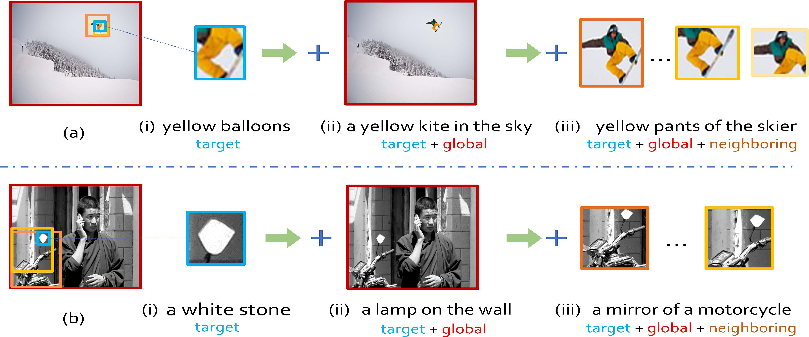
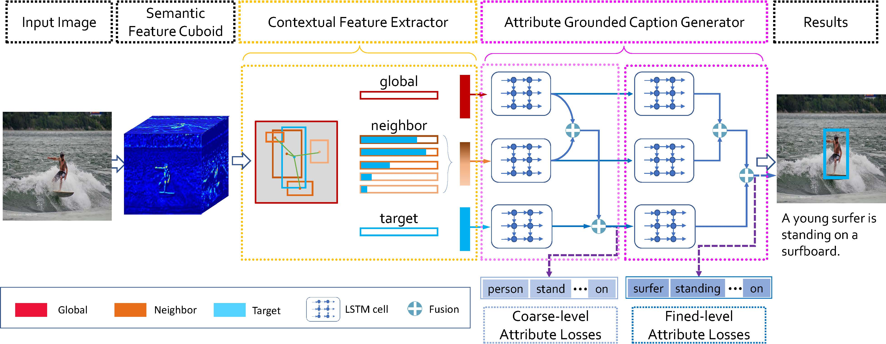
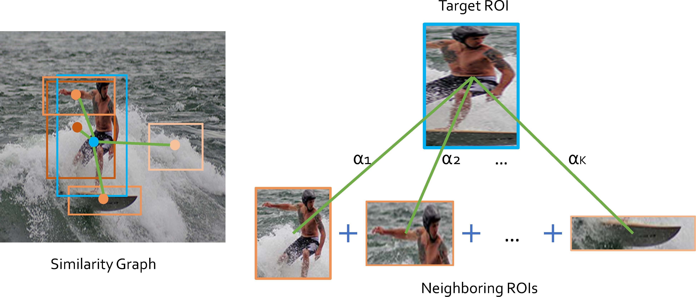
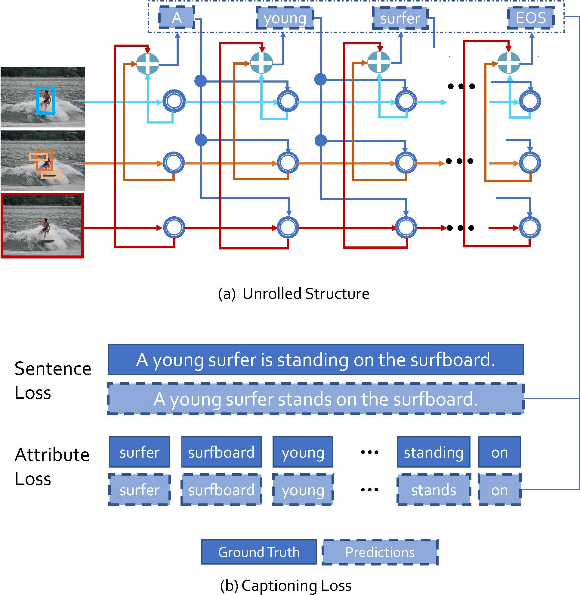
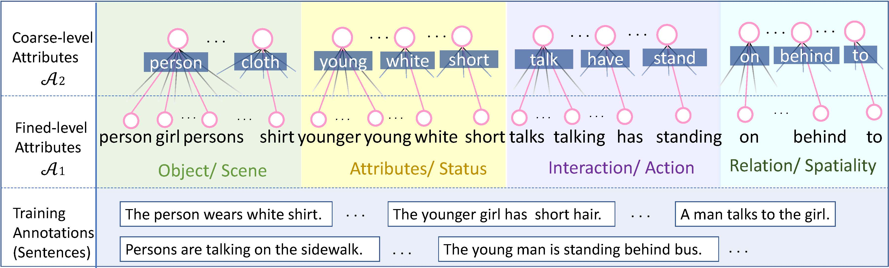

Guojun Yin1,2,
Lu Sheng2,4,
Bin Liu1,
Nenghai Yu1,
Xiaogang Wang2,
and Jing Shao3
1University of Science and Technology of China, 2The Chinese University of Hong Kong,
3SenseTime Research, 4Beihang University
[PDF]
[Code]
[Homepage]
Introduction
Dense captioning aims at simultaneously localizing semantic regions and describing these regions-of-interest (ROIs) with short phrases or sentences in natural language. Previous studies have shown remarkable progresses, but they are often vulnerable to the aperture problem that a caption generated by the features inside one ROI lacks contextual coherence with its surrounding context in the input image. In this work, we investigate contextual reasoning based on multi-scale message propagations from the neighboring contents to the target ROIs. To this end, we design a novel end-to-end context and attribute grounded dense captioning framework consisting of 1) a contextual visual mining module and 2) a multi-level attribute grounded description generation module. Knowing that captions often co-occur with the linguistic attributes (such as who, what and where), we also incorporate an auxiliary supervision from hierarchical linguistic attributes to augment the distinctiveness of the learned captions. Extensive experiments and ablation studies on Visual Genome dataset demonstrate the superiority of the proposed model in comparison to state-of-the-art methods.

The contributions of this work:
- We design a context and attribute grounded dense captioning model that permits multi-scale (i.e., local, neighboring, global) contextual information sharing and message passing, in which the knowledge integration is built on a non-local similarity graph among instances in the input image.
- A coarse-to-fine linguistic attribute supervision is proposed to enhance the discriminativeness of the generated captions, in which the ground-truth hierarchical linguistic attributes are matched to the predicted keywords through a novel coarse-to-fine manner.
- Extensive experiments demonstrate the effectiveness of the proposed CAG-Net model on the challenging large-scale VG dataset.
CAG-Net
In this paper, we propose a novel end-to-end dense image captioning framework, named as Context and Attribute Grounded Dense Captioning (CAG-Net). We first learn visual features of the input image by a CNN model as the way adopted by Faster RCNN, and obtain the semantic features. Such semantic features are used to generate a set of candidate regions (ROIs) by a Region Proposal Network (RPN). Based on these ROI features, we introduce a Contextual Feature Extractor (CFE) which generates the global, neighboring and local (i.e., target itself) cues. The neighboring cues are collected by establishing a similarity graph between the target ROI and the neighboring ROIs. The multi-scale contextual cues, broadcast in parallel, are fused by an Attribute Grounded Caption Generator (AGCG) which employs multiple LSTM cells. To generate rich and fine-grained descriptions and reinforce the coarse-to-fine procedure of description generation, we adopt an auxiliary supervision, Linguistic Attributes, hierarchically upon the outputs of the sequential LSTM cells. The proposed model is trained to minimize both the sentence loss as well as the binary cross-entropy losses (attribute losses) for caption generation.

Contextual Feature Extractor
We design a similarity graph based on region-level (i.e., ROI-level) for neighboring ROIs aggregation, inspired by pixel-level non-local operations. Non-local means
has been often used as a filter by computing a weighted mean of all pixels in an image, which allows pixels to contribute to the filtered response based on the patch appearance similarity. Similarly, neighboring ROIs with similar semantic appearance are supposed to contribute more on the feature extraction for the target local instance.

Contextual Cue Integrator
The contextual cue integrator adopts multiple LSTM cells to hierarchically integrate the multi-scale contextual features into the localized features. The local, neighboring and global features are spread through in the LSTM cells so as to generate contextaware descriptions for the target ROI. These descriptions are fused together for the final captioning of the target region at each time step of LSTM. The local branch can be regarded as the backbone for the target while the global and neighboring branches are grouped as multi-scale contextual cues to provide complementary guidances. Therefore, the contextual cues are adaptively combined at first, and they are then added to the local branch via a second adaptive fusion.

Attribute Grounded Coarse-to-Fine Generator
It is challenging in generating rich and accurate descriptions just by the sequential LSTMs. To this end, we increase its representative power by introducing a coarse-to-fine caption generation procedure with sequential LSTM cells, i.e., coarse stage and refined stage supervised with the auxiliary hierarchical linguistic attribute losses.
The subsequent LSTM layer (refined stage) is supposed to serve as the fine-grained decoders for the coarse regional descriptions generated by the preceding one
(coarse stage). The hidden vectors of LSTM cells produced by the coarse stage are taken as the disambiguating cues to the refined stage. The outputs of global and neighboring branches at the coarse stage are used as the inputs of the respective branches directly at the refined stage. The adaptive fusion of these three branches at the coarse stage is fed as the input at the refined stage. Meanwhile, these vectors are used for coarse-level attribute prediction. The final outputs of the word decoder at the refined stage are the generated descriptions for the target region. Meanwhile, these outputs are used for the fined-level attribute prediction as well.
These linguistic attributes are predicted from the outputs of the LSTMs during the training procedure and the unsolved problem here is how to get the ground-truth linguistic attributes. In our work, the hierarchical linguistic attributes are obtained by itemizing the sentences in the training split with natural language processing toolkit (NLTK).

Reference
If you use our code or model, please cite our papers.
Yin, Guojun, Lu Sheng, Bin Liu, Nenghai Yu, Xiaogang Wang, and Jing Shao. "Context and Attribute Grounded Dense Captioning", in Proceedings of IEEE Conference on Computer Vision and Pattern Recognition (CVPR) 2019.
Contact Me
If you have any questions, please feel free to contact me (gjyin91@gmail.com or gjyin@mail.ustc.edu.cn).
Last
update: June 11, 2019